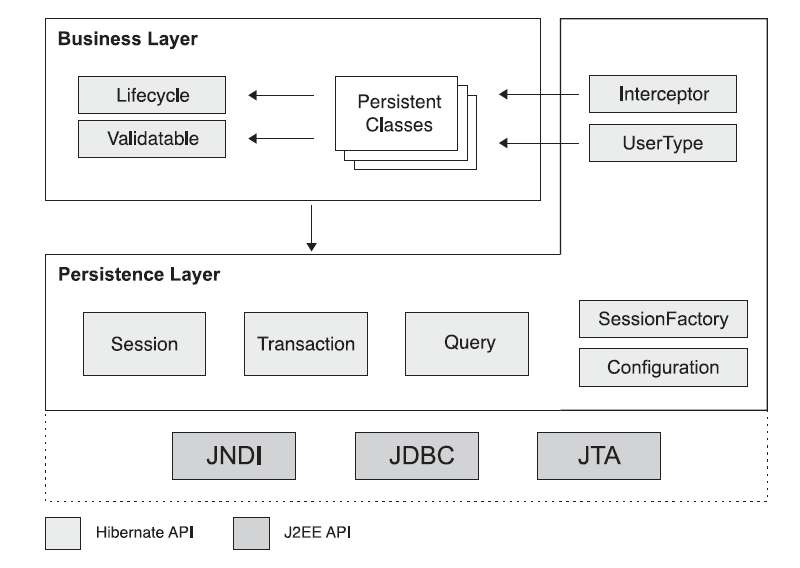
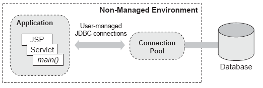
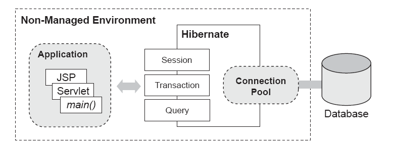

Introducción a Hibernate: Configuración e Inicio
- ¿Por qué necesitamos Hibernate?
- Persistencia y ORM
- Arquitectura Hibernate
- Configuración básica
- Especificación de opciones de configuración (Configuration)
- Creación de una SessionFactory
- Configuración de la conexión de base de datos
- Uso de configuraciones basadas en XML
- Enlazado de una SessionFactory a JNDI
- Configuración de logging
- Resumen de los pasos de configuración e inicio de Hibernate
- Hibernate Tools
Explicaremos la necesidad de Hibernate. Introduciremos los APIs principales de Hibernate. Mostraremos cómo configurar Hibernate en aplicaciones stand-alone.
¿Por qué necesitamos Hibernate?
Es usual trabajar con programación orientada a objetos y utilizar bases de datos (BD) relacionales. Resulta obvio que se trata de dos paradigmas diferentes. El modelo relacional trata con relaciones, tuplas y conjuntos, y es muy matemático por naturaleza. El paradigma orientado a objetos, sin embargo, trata con objetos, sus atributos y relaciones entre objetos. Cuando se quiere hacer que los objetos sean persistentes utilizando para ello una BD relacional, uno se da cuenta de que hay una desavenencia entre estos dos paradigmas: es lo que se denomina un "object-relational gap", o también paradigm mismatch.
¿Cómo se manifiesta esta "brecha" entre ambos paradigmas? Si estamos utilizando objetos en nuestra aplicación y en algún momento queremos que sean persistentes, normalmente abriremos una conexión JDBC, crearemos una sentencia SQL y copiaremos todos los valores de las propiedades sobre una PreparedStatement o en la cadena SQL que estemos construyendo. Esto puede resultar sencillo para un objeto de tipo valor (value object: VO) de pequeño tamaño, pero consideremos esto para un objeto con muchas propiedades. Y éste no es el único problema. ¿Qué ocurre con las asociaciones? ¿Y si el objeto contiene a su vez a otros objetos? ¿Los almacenaremos también en la BD? ¿Automáticamente? ¿Manualmente? ¿Qué haremos con las claves ajenas? Preguntas similares surgen a la hora de "cargar" un dato de la BD en un VO (se denomina value object o VO a un objeto que contiene información de negocio estructurada en grupos de items de datos, también recibe el nombre de transfer object. Si Java tuviesese una construcción semejante a las estructuras de C/C++ u otros lenguajes, un VO sería una estructura).
Como se puede comprobar por lo que acabamos de decir, la brecha existente entre los paradigmas de objetos y relacional se vuelve mucho mayor si disponemos de modelos con objetos "grandes". De hecho, hay estudios que muestran que un 35% del código de una aplicación se produce como consecuencia del mapeado (correspondencia) entre los datos de la aplicación y el amacén de datos.
Dicho todo esto, lo que necesitamos es una herramienta ORM (Object Relational Mapping). Básicamente, una ORM intenta hacer todas estas tareas pesadas por nosotros. Con una buena ORM, tendremos que definir la forma en la que estableceremos la correspondencia entre las clases y las tablas una sóla vez (indicando qué propiedad se corresponde con qué columna, qué clase con qué tabla, etc.). Después de lo cual podremos hacer cosas como utilizar POJO's (Plain Old Java Objects) de nuestra aplicación y decirle a nuestra ORM que los haga persistentes, con una instrucción similar a esta: orm.save(myObject). Es decir, una herramienta ORM puede leer o escribir en la base de datos utilizando VOs directamente.
Más formalmente: un modelo del dominio representa las entidades del negocio utilizadas en una aplicación Java. En una arquitectura de sistemas por capas, el modelo del dominio se utiliza para ejecutar la lógica del negocio en la capa del negocio (en Java, no en la base de datos). Esta capa del negocio se comunica con la capa de persistencia subyacente para recuperar y almacenar los objetos persistentes del modelo del dominio. ORM es el middleware en la capa de persistencia que gestiona la persistencia.
Hibernate es una ORM de libre distribución, que además, es de las más maduras y completas. Actualmente su uso está muy extendido y además está siendo desarrollada de forma muy activa. Una característica muy importante que distingue Hibernate de otras soluciones al problema de la persistencia, como los EJBs de entidad, es que la clase Hibernate persistente puede utilizarse en cualquier contexto de ejecución, es decir, no se necesita un contenedor especial para ello.
Persistencia y ORM
Casi todas las aplicaciones requieren datos persistentes. La persistencia es uno de los conceptos fundamentales en el desarrollo de aplicaciones. Si un sistema de información no preserva los datos introducidos por los usuarios cuando se apaga el ordenador, el sistema no tendrá ninguno o muy poco uso práctico. Cuando hablamos de persistencia en Java, normalmente hablamos de almacenar los datos en una base de datos relacional utilizando SQL via el API JDBC (Java Database Connectivity). El modelo relacional y especialmente SQL es una elección correcta para la persistencia en aplicaciones orientadas a objetos y es casi siempre un "requerimiento" en cualquier proyecto Java. Sin embargo, entre los paradigmas objetual y relacional existen discrepancias importantes que hacen que en los últimos años se estén invirtiendo esfuerzos relacionados con la cuestión de la persistencia en los proyectos de empresa.
En una aplicación orientada a objetos, la persistencia permite que un objeto sobreviva al proceso que lo ha creado. El estado del objeto puede almacenarse en un disco y más tarde se puede volver a crear un objeto con el mismo estado si es necesario. Pero no todos los objetos requieren ser persistentes. En una aplicación Java hay una mezcla de objetos persistentes y no persistentes, por lo que necesitemamos un subsistema que gestione nuestros datos persistentes: este subsistema es una base de datos relacional.
Entre el modelo del dominio (que utiliza una representación de objetos), y el modelo relacional (que utiliza una representación de tablas, también denominado modelo entidad-relación) existen numerosas discrepancias que una buena ORM intenta solucionar. Una ORM realiza de forma automática la correspondencia entre los objetos persistentes de una aplicación java en tablas de una base de datos relacional, utilizando metadatos que describen dicha correspondiencia entre los objetos y la base de datos. Una ORM, en definitiva transforma los datos de una representación a otra (en los dos sentidos). El uso de una ORM implica ciertas desventajas en cuanto al rendimiento de la aplicación, ya que estamos introduciendo una capa más de software. Sin embargo, si ORM se implementa como un middleware, se tienen muchas oportunidades de optimización que no existirían si utilizáramos una capa de persistencia escrita "a mano". Otra desventaja (en tiempo de desarrollo) es que tenemos que introducir los metadatos para la transformación, pero aquí también el coste es menor que el coste equivalente de mantener una solución "a mano".
Una solución ORM consiste básicamente en cuatro partes:
- Un API para realizar operaciones CRUD (Create, Retrieve, Update, Delete) básicas sobre objetos de clases persistentes.
- Un lenguaje o API para especificar consultas referidas con las clases y sus propiedades (atributos).
- Facilidades para la especificación de los metadatos.
- Técnicas de implementación para interactuar con los objetos transaccionales para la realización de diversas funciones de optimización, (como dirty checking, entre otros).
La implementación de una ORM es una tarea compleja (menos complejo que un servidor de aplicaciones, pero más complejo que un framework de aplicaciones Web tales como Struts o Tapestry). Entonces, ¿por qué introducir otro nuevo elemento de infraestructura complejo en nuestro sistema? La respuesta está en los beneficios de su uso, algunos de ellos son:
- Productividad: El código relacionado con la persistencia es quizá, el código más tedioso de una aplicación Java. Una ORM elimina mucho esfuerzo relacionado con la escritura de dicho código y nos permite concentrarnos en el problema del negocio, reduciendo por lo tanto el tiempo de desarrollo de forma significativa.
- Mantenibilidad: La transformación automática de la persistencia objeto/relacional reduce sustancialmente las líneas de código (LOC: Lines Of Code). Menos LOC hacen que el sistema sea más comprensible, ya que enfasizan la lógica del negocio en vez de otros aspectos tangenciales. Más importante todavía, un sistema con menos código es más fácil de refactorizar. Por otro lado, en sistemas con persistencia codificada manualmente, existe una inevitable dependencia entre ambas representaciones: los cambios en una siempre implican cambios en la otra. Además, a menudo el diseño de una representación se compromete para acomodar la existencia de la otra (en la práctica casi siempre se ve comprometido el modelo de objetos del dominio). Una ORM proporciona un "buffer" entre los dos modelos, favoreciendo cambios menores entre ellos.
- Rendimiento: Las tareas relacionadas con la persistencia pueden optimizarse. Cuando tenemos que cumplir restricciones temporales con respecto a la fecha de entrega del producto, el uso de una ORM permite realizar muchas más optimizaciones que con una programación manual. Además, la gente que implementa una ORM probablemente hayan tenido mucho más tiempo que nosotros en investigar posibles optimizaciones, por lo que el rendimiento de una aplicación se verá favorecido por el uso de dicha ORM.
- Independencia del vendedor: Una ORM abstrae la aplicación de la base de datos SQL y su dialecto SQL subyacente. Además, si la herramienta soporta varias bases de datos diferentes (la mayoría lo hacen), esto confiere cierto nivel de portabilidad en nuestra aplicación.
Todo ello hace que, hoy por hoy, la utilización de una ORM sea la mejor solución, permitiendo un ahorro significativo de tiempo para los desarrolladores que se enfrentan con las discrepancias existentes entre los paradigmas orientado a objetos y relacional.
Arquitectura Hibernate
Las interfaces de programación son la primera cosa que tenemos que aprender sobre Hibernate para poder utilizarlo en la capa de persistencia de nuestra aplicación. La siguiente Figura muestra los roles de las interfaces Hibernate más importantes en las capas de persistencia y de negocio de una aplicación J2EE. La capa de negocio está situada sobre la capa de persistencia, ya que la capa de negocio actúa como un cliente de la capa de persistencia.

Las interfaces mostradas pueden clasificarse como sigue:
- Interfaces llamadas por la aplicación para realizar operaciones básicas (inserciones, borrados, consultas,...): Session, Transaction, y Query.
- Interfaces llamadas por el código de la infraestructura de la aplicación para configurar Hibernate. La más importante es la clase Configuration.
- Interfaces callback que permiten a la aplicación reaccionar ante determinados eventos que ocurren dentro de la aplicación, tales como Interceptor, Lifecycle, y Validatable.
- Interfaces que permiten extender las funcionalidades de mapeado de Hibernate, como por ejemplo UserType, CompositeUserType, e IdentifierGenerator.
Además, Hibernate hace uso de APIs de Java, tales como JDBC, JTA (Java Transaction Api) y JNDI (Java Naming Directory Interface).
Daremos un repaso breve a algunas de las interfaces mencionadas.
- La interfaz Session es una de las interfaces primarias en cualquier aplicación Hibernate. Una instancia de Session es "poco pesada" y su creación y destrucción es muy "barata". Esto es importante, ya que nuestra aplicación necesitará crear y destruir sesiones todo el tiempo, quizá en cada petición. Puede ser útil pensar en una sesión como en una caché o colección de objetos cargados (a o desde una base de datos) relacionados con una única unidad de trabajo. Hibernate puede detectar cambios en los objetos pertenecientes a una unidad de trabajo.
- La interfaz SessionFactory permite obtener instancias Session. Esta interfaz no es "ligera", y debería compartirse entre muchos hilos de ejecución. Típicamente hay una única SessionFactory para toda la aplicación, creada durante la inicialización de la misma. Sin embargo, si la aplicación accede a varias bases de datos se necesitará una SessionFactory por cada base de datos.
- La interfaz Configuration se utiliza para configurar y "arrancar" Hibernate. La aplicación utiliza una instancia de Configuration para especificar la ubicación de los documentos que indican el mapeado de los objetos y propiedades específicas de Hibernate, y a continuación crea la SessionFactory.
- La interfaz Query permite realizar peticiones a la base de datos y controla cómo se ejecuta dicha petición (query). Las peticiones se escriben en HQL o en el dialecto SQL nativo de la base de datos que estemos utilizando. Una instancia Query se utiliza para enlazar los parámetros de la petición, limitar el número de resultados devueltos por la petición, y para ejecutar dicha petición.
- Un elemento fundamental y muy importante en la arquitectura Hibernate es la noción de Type. Un objeto Type Hibernate hace corresponder un tipo Java con un tipo de una columna de la base de datos. Todas las propiedades persistentes de las clases persistentes, incluyendo las asociaciones, tienen un tipo Hibernate correspondiente. Este diseño hace que Hibernate sea altamente flexible y extendible. Incluso se permiten tipos definidos por el usuario (interfaz UserType y CompositeUserType).
Configuración básica
Para utilizar Hibernate en una aplicación, es necesario conocer cómo configurarlo. Hibernate puede configurarse y ejecutarse en la mayoría de aplicaciones Java y entornos de desarrollo. Generalmente, Hibernate se utiliza en aplicaciones cliente/servidor de dos y tres capas, desplegándose Hibernate únicamente en el servidor. Las aplicaciones cliente normalmente utilizan un navegador web, pero las aplicaciones swing y AWT también son usuales. Aunque solamente vamos a ver cómo configurar Hibernate en un entorno no gestionado, es importante comprender la diferencia entre la configuración de Hibernate para entornos gestionados y no gestionados:
- Entorno gestionado: los pools de recursos tales como conexiones a la base de datos permiten establecer los límites de las transacciones y la seguridad se debe especificar de forma declarativa, es decir, en sus metadatos. Un servidor de aplicaciones J2EE, tal como JBoss, Bea WebLogic o IBM WebSphere implementan un entorno gestionado para Java.
- Entorno no gestionado: proporciona una gestión básica de la concurrencia a través de un pooling de threads (hilos de ejecución). Un contenedor de servlets, como Tomcat proporciona un entorno de servidor no gestionado para aplicaciones web Java. Una aplicación stand-alone también se considera como no gestionada. Los entornos no gestionados no proporcionan infraestructura para transacciones automáticas, gestión de recursos, o seguridad. La propia aplicación es la que gestiona las conexiones con la base de datos y establece los límites de las transacciones.
Tanto en un entorno gestionado como en uno no gestionado, lo primero que debemos hacer es iniciar Hibernate. Para hacer esto debemos crear una SessionFactory desde una Configuration. A continuación explicamos cómo establecer las opciones de configuración de Hibernate.
Especificación de opciones de configuración (Configuration)
Una instancia de org.hibernate.cfg.Configuration representa un conjunto completo de correspondencias (mapeados) entre los tipos Java de una aplicación y los tipos de una base de datos SQL, además de contener un conjunto de propiedades de configuración. Una lista de las posibles propiedades de configuración y su explicación la podemos consultar en el manual de referencia de Hibernate incluido en la distribución (directorio doc\reference\en\pdf). Para especificar las opciones de configuración, se pueden utilizar cualquiera de las siguientes formas:
- Pasar una instancia de java.util.Properties a Configuration.setProperties()
- Establecer las propiedades del sistema mediante java -Dproperty=value
- Situar un fichero denominado hibernate.properties en el classpath
- Incluir elementos <property> en el fichero hibernate.cfg.xml en el classpath
Las dos primeras opciones no se suelen utilizar, excepto para pruebas rápidas y prototipos. La mayoría de las aplicaciones requieren un fichero de configuración fijo. Las dos últimas opciones sirven para lo mismo: configurar Hibernate. Elegir entre una u otra depende simplemente de nuestras preferencias sintácticas.
En esta sesión veremos cómo configurar Hibernate en un entorno no gestionado. Debido a que Hibernate está diseñado para utilizarlo en muchos entornos diferentes, hay muchos parámetros de configuración que podemos utilizar. Afortunadamente, la mayoría tienen valores por defecto e Hibernate se distribuye con un ejemplo de fichero de propiedades (hibernate.properties) en el directorio etc/ que muestra varias opciones. Puede resultar útil copiar dicho fichero en nuestro classpath y simplemente modificarlo a nuestra conveniencia.
Creación de una SessionFactory
Para crear una SessionFactory, primero debemos crear una única instancia de Configuration durante la inicialización de la aplicación y utilizarla para determinar la ubicación de los ficheros de mapeado. Una vez configurada, la instancia de Configuration se utiliza para crear la SessionFactory. Una vez creada la SessionFactory, podemos olvidarnos de la clase Configuration.
El siguiente código inicia Hibernate:
Configuration cfg = new Configuration();
cfg.addResource("hello/Message.hbm.xml");
cfg.setProperties (System.getProperties());
SesionFactory sessions = cfg.buildSessionFactory();
La ubicación del fichero de mapeado, Message.hbm.xml, es relativa a la raíz del classpath de la aplicación. Por ejemplo, si el classpath es el directorio actual, el fichero Message.hbm.xml debería estar en el sub-directorio hello. En este ejemplo, utilizamos también las propiedades del sistema de la máquina virtual para determinar otras opciones de configuración (que también hubieran podido definirse antes en el código de la aplicación o como opciones de inicio).
El código anterior puede escribirse utilizando el estilo de programación denominado method chaining, que está soportado en la mayoría de interfaces de Hibernate. De esta forma, no necesitamos declarar una variable local para Configuration. El ejemplo anterior quedaría como sigue:
SessionFactory sessions = new Configuration()
.addResource ("hello/Message.hbm.xml")
.setProperties (System.getProperties() )
.buildSessionFactory();
Por convención los ficheros de mapeado xml llevan la extensión hbm.xml. Otra convención es tener un fichero de mapeado por clase, en vez de tener todos los mapeados en un único fichero (lo cual es posible, pero se considera un mal estilo). Nuestro ejemplo tiene solamente una clase persistente situada en el mismo directorio que dicha clase, pero si tuviésemos más clases persistentes, con un fichero xml para cada una de ellas, ¿dónde deberíamos situar dichos ficheros de configuración?
En la documentación de Hibernate se recomienda que el fichero de mapeado para cada clase persistente se situe en el mismo directorio de dicha clase. Se pueden cargar múltiples ficheros de mapeado con sucesivas llamadas a addResource(). De forma alternativa, también se puede utilizar el método addClass(), pasando como parámetro una clase persistente: así dejaremos que Hibernate busque el documento de mapeado por nosotros:
SessionFactory sessions = new Configuration() .addClass(org.hibernate.auction.model.Item.class) .addClass(org.hibernate.auction.model.Category.class) .addClass(org.hibernate.auction.model.Bid.class) .setProperties(System.getProperties() ) .buildSesionFactory();
El método addClass() asume que el nombre del fichero de mapeado termina con la extensión .hbm.xml y que está desplegado junto con el fichero .class al que hace referencia.
En una instancia de Configuration también podemos especificar las propiedades de configuración (mediante setProperties). En el ejemplo anterior, pasamos como parámetro las propiedades del sistema, pero podemos especificar propiedades concretas en forma de parejas (nombre_propiedad, valor_propiedad)como en el siguiente caso:
SessionFactory sessions = new Configuration()
.addClass (org.hibernate.auction.Item.class")
.addClass (org.hibernate.auction.Bid.class")
.setProperty("hibernate.dialect","org.hibernate.dialect.MySQLInnoDBDialect")
.setProperty ("hibernate.connection.datasource", "java:comp/env/jcbc/test")
.setProperty ("hibernate.order_updates", "true")
.buildSessionFactory();
Acabamos de ver cómo crear una SessionFactory. La mayoría de las aplicaciones necesitan crear una SessionFactory. Si fuese necesario crear otra SessionFactory (si por ejemplo, hubiese varias bases de datos), habría que repetir el proceso. En este caso cada SessionFactory estaría disponible para una base de datos y lista para producir Sessions para trabajar con esa base de datos en particular y con un conjunto de ficheros de correspondencia de clases.
Por su puesto, configurar Hibernate requiere algo más que indicar cuáles son los documentos de mapeado. También es necesario especificar cómo se obtienen las conexiones a las bases de datos, entre otras cosas. De todas las opciones de configuración, las opciones de la base de datos son las más importantes. Estas opciones son distintas según estemos en un entorno gestionado o no gestionado. En nuestro caso, solamente vamos a comentar el segundo caso.
Configuración de la conexión de base de datos
En un entorno no gestionado, como por ejemplo un contenedor de servlets, la aplicación es la responsable de obtener las conexiones JDBC. Hibernate es parte de la aplicación, por lo que es responsable de obtener dichas conexiones. Generalmente, no es conveniente crear una conexión cada vez que se quiere interactuar con la base de datos. En vez de eso, las aplicaciones Java deberían usar un pool de conexiones. Hay tres razones por las que usar un pool:
- Conseguir una nueva conexión es caro.
- Mantener muchas conexiones ociosas es caro.
- Crear la preparación de sentencias es también caro para algunos drivers.
La siguiente Figura muestra el papel de un pool de conexiones JDBC en un entorno de ejecución de una aplicación web (sin utilizar Hibernate). Ya que este entorno es no gestionado, no implementa el pooling de conexiones, por lo que la aplicación debe implementar su propio algoritmo de pooling o utilizar alguna librería como por ejemplo el pool de conexiones de libre distribución C3P0. Sin Hibernate, el código de la aplicación normalmente llama al pool de conexiones prara obtener las conexiones JDBC y ejecutar sentencias SQL.

Con Hibernate, este escenario cambia: Hibernate actúa como un cliente del pool de conexiones JDBC, tal y como se muestra en la siguiente Figura. El código de la aplicación utiliza los APIs Session y Query para las operaciones de persistencia y solamente tiene que gestionar las transacciones a la base de datos, idealmente, utilizando el API Hibernate Transaction.

Hibernate define una arquitectura de plugins que permite la integración con cualquier pool de conexiones. Puesto que Hibernate ya incluye soporte para C3P0, vamos a ver cómo usarlo. Hibernate actualizará la configuración del pool por nosotros con las propiedades que determinemos. Un ejemplo de un fichero hibernate.properties utilizando C3P0 se muestra en el siguiente listado:
hibernate.connection.driver_class=org.postgresql.Driver hibernate.connection.url = jdbc:postgresql://localhost/auctiondb hibernate.connection.username = auctionuser hibernate.conection.password = secret hibernate.dialect = net.sf.hibernate.dialect.PosgreSQLDialect hibernate.c3p0.min_size=5 hibernate.c3p0.max_size=20 hibernate.c3p0.timeout=300 hibernate.c3p0.max_elements=50 hibernate.c3p0.idle_test_period=3000
Estas líneas de código especifican la siguiente información:
- El nombre de la clase Java que implementa el Driver JDBC (el fichero JAR del driver debe estar en el classpath de la aplicación.
- La URL JDBC que especifica el host y nombre de la base de datos para las conexiones JDBC.
- El nombre del usuario de la base de datos
- El password de la base de datos para el usuario especificado
- Un Dialect para la base de datos. A pesar de esfuerzo de estandarización de ANSI, SQL se implementa de forma diferente por diferentes vendedores, por lo que necesitamos especificar un Dialect. Hibernate soporta el SQL de las bases de datos más populares.
- El número mínimo de conexiones JDBC que C3P0 mantiene preparadas.
- El número máximo de conexiones en el pool. Se lanzará una excepción si este número se sobrepasa en tiempo de ejecución.
- El periodo de tiempo (en este caso, 5 minutos o 300 segundos) después del cual una conexión no usada se eliminará del pool.
- El número máximo de sentencias preparadas que serán almacenadas en una memoria intermedia (caché). Esto es esencial para un mejor rendimiento de Hibernate.
- El tiempo en segundos que una conexión debe estar sin utilizar para que se valide de forma automática dicha conexión.
El especificar las propiedades de la forma hibernate.c3p0.* selecciona C3P0 como el pool de conexiones para Hibernate (sin necesidad de ninguna otra acción). Otros pools de conexiones soportados son Apache DBCP y Proxool.
Si queremos que Hibernate obtenga conexiones de un Datasource registrado en JNDI, necesitaremos indicar al menos una de las siguientes propiedades:
- hibernate.connection.datasource: nombre del datasource JNDI.
- hibernate.jndi.url: URL del proveedor de JNDI (opcional).
- hibernate.jndi.class: clase de la JNDI InitialContextFactory (opcional).
- hibernate.connection.username: usuario de la base de datos (opcional).
- hibernate.connection.password: password del usuario de la base de datos (opcional).
Uso de configuraciones basadas en XML
Como ya se ha comentado en el apartado 3.3, podemos utilizar un fichero de configuración XML para configurar completamente una SessionFactory. A diferencia del fichero hibernate.properties, que contiene solamente parámetros de configuración, el fichero hibernate.cfg.xml puede especificar también la ubicación de los documentos de mapeado. Muchos usuarios prefieren centralizar la configuración de Hibernate de esta forma, en vez de añadir parámetros a Configuration en el código de la aplicación. Un ejemplo de fichero de configuración basado en XML es el siguiente:
<?xml version='1.0' encoding='utf-8'?>
<!DOCTYPE hibernate-configuration
PUBLIC "-//Hibernate/Hibernate Configuration DTD//EN"
"http://hibernate.sourceforge.net/hibernate-configuration-3.0.dtd">
<hibernate-configuration>
<session-factory name="java:/hibernate/HibernateFactory">
<!--propiedades-->
<property name="show_sql">true</property>
<property name="connection.datasource">
java:/comp/env/jdbc/AuctionDB
</property>
<property name="dialect">
net.sf.hibernate.dialect.PostgreSQLDialect
</property>
<property name="transaction.manager_lookup_class">
net.sf.hibernate.transaction.JBossTransactionManagerLookup
</property>
<!--ficheros de mapeado-->
<mapping resource="auction/Item.hbm.xml"/>
<mapping resource="auction/Category.hbm.xml"/>
<mapping resource="auction/Bid.hbm.xml"/>
</session-factory>
</hibernate-configuration>
La declaración <document type> se usa por el analizador de XML para validar este documento frente a la DTD de configuración de Hibernate.
El atributo name opcional es equivalente a la propiedad hibernate.session_factory_name y se usa para el enlazado JNDI de la SessionFactory.
Las propiedades de Hibernate (<property>) pueden especificarse sin el prefijo hibernate. Los nombres de las propiedades y valores son, por otro lado, idénticas a las propiedades de configuración especificadas mediante programación.
Los documentos de mapeado (<mapping resource>) pueden especificarse como recursos de la aplicación.
Ahora podemos inicializar Hibernate utilizando
SessionFactory sessions = new Configuration().configure().buildSessionFactory();
Cuando se llama a configure(), Hibernate busca un fichero denominado hibernate.cfg.xml en el classpath. Si se quiere utilizar un nombre de fichero diferente o hacer que Hibernate busque en un subdirectorio, debemos pasar una ruta al método configure():
SessionFactory sessions = new Configuration()
.configure("/hibernate-config/auction.cfg.xml")
.buildSessionFactory();
Utilizar un fichero de configuración XML ciertamente es más cómodo que usar un fichero de propiedades o mediante programación. El hecho de que se puedan tener ficheros de mapeado externos al código fuente de la aplicación es el principal beneficio de esta aproximación. Así, por ejemplo, podemos usar diferentes conjuntos de ficheros de mapeado (y diferentes opciones de configuración), dependiendo de la base de datos que utilicemos y el entorno (de desarrollo o de producción), y cambiar entre ellos mediante programación.
Si tenemos ambos ficheros, hibernate.properties, e hibernate.cfg.xml, en el classpath, las asignaciones del fichero de configuración XML prevalecen sobre las del fichero de propiedades. Ésto puede resultar útil si queremos guardar algunas propiedades base y sobreescribirlas para cada despliegue con un fichero de configuración XML.
Enlazado de una SessionFactory a JNDI
Una SessionFactory enlazada a JNDI puede simplificar la búsqueda de la factoría y la creación de nuevas Sessiones.
Si queremos tener la SessionFactory enlazada a un espacio de nombres JNDI, debemos especificar un nombre (por ejemplo java:hibernate/SessionFactory usando la propiedad hibernate.session_factory_name. Si esta propiedad se omite, la SessionFactory no será enlazada con JNDI. Esto resulta especialmente útil en entornos con una implementación por defecto de JNDI de sólo lectura, como por ejemplo Tomcat.
Cuando se enlaza la SessionFactory con JNDI, Hibernate usará los valores de hibernate.jndi.url e hibernate.jndi.class para instanciar el contexto inicial. Si no se especifican, se utilizará el InitialContext por defecto.
Hibernate automáticamente ubica la SessionFactory en JNDI después de que llamemos a cfg.buildSessionFactory(). Esta llamada la pondremos en algún código que se ejecute al comienzo de la aplicación.
Si se usa una SessionFactory JNDI, cualquier clase podrá obtener la SessionFactory utilizando una búsqueda JNDI.
Se recomienda enlazar la SessionFactory a JNDI en un entorno gestionado, y utilizar un singleton estático en otro caso. Para hacer transparentes estos detalles en nuestra aplicación, recomendamos "ocultar" el código de búsqueda de la SessionFactory en una clase auxiliar, (como por ejemplo en HibernateUtil.getSessionFactory()) utilizada en los ejercicios de esta sesión).
Configuración de logging
Hibernate (y muchas otras implementaciones de ORMs) ejecuta las sentencias SQL de forma asíncrona. Una sentencia INSERT normalmente no se ejecuta cuando la aplicación llama a Session.save(); una sentencia UPDATE no se ejecuta cuando la aplicación llama a Item.addBid(). En vez de eso, las sentencias SQL se ejecutan al final de una transacción.
Esta característica evidencia el hecho de que seguir una traza y depurar el código ORM es a veces no trivial. Una forma de ver qué es lo que está pasando internamente en Hibernate es utilizar el mecanismo de logging. Para ello tendremos que asignar a la propiedad hibernate.show_sql el valor true, lo que permite hacer logs en la consola del código SQL generado.
Hay veces en las que mostrar el código SQL no es suficiente. Hibernate "muestra" todos los eventos interesantes utilizando el denominado commons-logging de Apache, una capa de abstracción que redirige la salida al log4j de Apache (si colocamos log4j.jar en el classpath) o al logging de JDK1.4 (si estamos ejecutando bajo JDK1.4 o superior y log4j no está presente). Es recomendable utilizar log4j, ya que está más maduro, es más popular, y está bajo un desarrollo más activo.
Para ver las salidas desde log4j necesitamos un fichero denominado log4j.properties en nuestro classpath. El siguiente ejemplo redirige todos los mensajes log a la consola:
### direct log messages to stdout ### log4j.appender.stdout=org.apache.log4j.ConsoleAppender log4j.appender.stdout.Target=System.out log4j.appender.stdout.layout=org.apache.log4j.PatternLayout ### root logger option ### log4j.rootLogger=warn, stdout ### Hibernate logging options ### log4j.logger.net.sf.hibernate=info ### log JDBC bind parameters ### log4j.logger.net.sf.hibernate.type=info ### log PreparedStatement cache activity ### log4j.logger.net.sf.hibernate.ps.PreparedStatementCache=info
Con esta configuración, no aparecerán muchos mensajes de log en tiempo de ejecución. Si reeemplazamos info por debug en la categoría log4.logger.net.sf.hibernate se mostrará el trabajo interno de Hibernate.
Resumen de los pasos de configuración e inicio de Hibernate
Para finalizar, vamos a resumir los pasos para configurar e iniciar Hibernate:
- Descargar y descomprimir el driver JDBC para nuestra base de datos. Situar el fichero jar en el classpath de la aplicación; hacer lo mismo con hibernate3.jar.
- Añadir las dependencias de Hibernate en el classpath; éstas se distribuyen con Hibernate en el directorio /lib. En el fichero de texto lib/README.txt viene indicada una lista de librerías requeridas y opcionales.
- Elegir un pool de conexiones JDBC soportado por Hibernate y configurarlo con un fichero de propiedades. No debemos ovidarnos de especificar el dialecto SQL.
- Determinar las propiedades de Configuration en un fichero hibernate.properties en el classpath.
- Crear una instancia de Configuration en nuestra aplicación y cargar los ficheros de mapeado XML utilizando addResource() o addClass(). Obtener una SessionFactory a partir de Configuration llamando a BuildSessionFactory().
Hibernate Tools
Hibernate Tools es un conjunto de herramientas para facilitar el uso de Hibernate, que pueden utilizarse de forma "separada" (standalone) mediante Ant 1.6.x, o integradas en Eclipse. Comentaremos esta segunda opción que es la que utilizaremos en esta sesión y las siguientes.
Las Hibernate Tools comprenden las siguientes herramientas:
- Mapping editor: Un editor para los ficheros xml de mapeado de Hibernate
- Hibernate console: Es una nueva perspective en Eclipse. Permite describir qué ficheros de configuración deberíamos utilizar para configurar Hibernate, incluyendo el classpath para cargar los POJOs y drivers JDBC entre otros. Normalmente utilizaremos una única consola por proyecto, aunque podemos definir tantas como queramos.
-
Configuration Wizards y Code generation: Se proporcionan varios "asistentes" (wizards)
para la generación de:
- ficheros de configuración Hibernate, mediante New->Hibernate configuration file (cfg.xml) y New->Hibernate XML mapping file (hbm.xml)
- la consola de Hibernate, mediante New->Hibernate Console configuration),
- diversos artefactos basados en una base de datos existente (ingeniería inversa), o en una configuración ya existente de Hibernate (mediante Run->Hibernate Code Generation)
INSTALACIÓN DE HibernateTools EN ECLIPSE
Vamos a utilizar Hibernate desde Eclipse necesitamos instalar el plug-in corespondiente (HibernateTools-3.2.0.beta8.zip), (que también os podéis descargar desde la sección Roadmap de este módulo). Los pasos para su instalación son:
- Descomprimir el fichero HibernateTools-3.2.0.beta8.zip en el directorio raiz de eclipse.
- Para asegurarnos de que eclipse detecte el nuevo plug-in tenemos que ejecutar eclipse con la opción -clean: eclipse -clean. Por ejemplo, podemos hacerlo desde una ventana de comandos de Windows (Inicio->Ejecutar->cmd).
Conjunto mínimo de librerías NECESARIAS para trabajar con HIBERNATE
Para poder trabajar con Hibernate, necesitamos tener accesibles un conjunto mínimo de librerías (añadiendo los *.jar externos necesarios en Properties->Java build path->Libraries) que encontraremos en el directorio lib de la distribución de Hibernate con la que trabajemos. En nuestro caso, vamos a utilizar Hibernate 3.1.3, y dicho conjunto mínimo de librerías (que se indica en el fichero _README.txt del directorio lib) es:
- antlr-2.7.6rc1.jar.
- asm.jar.
- asm-attrs.jar.
- cglib-2.1.3.jar.
- commons-collections-2.1.1.jar.
- commons-logging-1.0.4.jar.
- dom4j-1.6.1.jar.
- ehcache-1.1.jar: se recuiere sólo si no se proporciona otro proveedor para la cache.
- jdbc2_0-stdext.jar: requerido en modo standalone (fuera de un serividor de aplicaciones.
- jta.jar: requerido en modo standalone (fuera de un serividor de aplicaciones.
- log4j-1.2.11.jar: es opcional, pero la mayoría de los usuarios la utilizan.
- hibernate3.jar: esta librería está en el directorio raíz de la distribución de Hibernate.
Fichero de configuración de Hibernate (cfg.xml)
Para crear el fichero de configuración de Hibernate utilizaremos el Wizard correspondiente mediante: New->Hibernate configuration file (cfg.xml).
La información que tendremos que concretar es:
- Nombre de la Session Factory: podemos poner cualquier nombre
- Dialecto de la base de datos: podemos elegir un dialecto de una lista desplegable
- Clase para el driver: podemos elegir un dialecto de una lista desplegable
- Url de la conexión
- Nombre de usuario para la conexión
- Password de usuario para la conexión
Además, podemos marcar la casilla Create Console Configuration, si queremos crear también la consola de configuración.
Consola de configuración de Hibernate
La consola de configuración describe qué ficheros deben usarse para configurar Hibernate, incluyendo el classpath para cargar los POJOs, drivers JDBC y cualquier otro fichero que necesitemos. Normalmente tendremos una consola de configuración por proyecto, aunque se pueden tener varias si queremos.
Podemos crear una consola de configuración a partir de un fichero de configuración cfg.xml, o también utilizando directamente el wizard correspondiente mediante: New->Other->Hibernate->Hibernate Console Configuration.